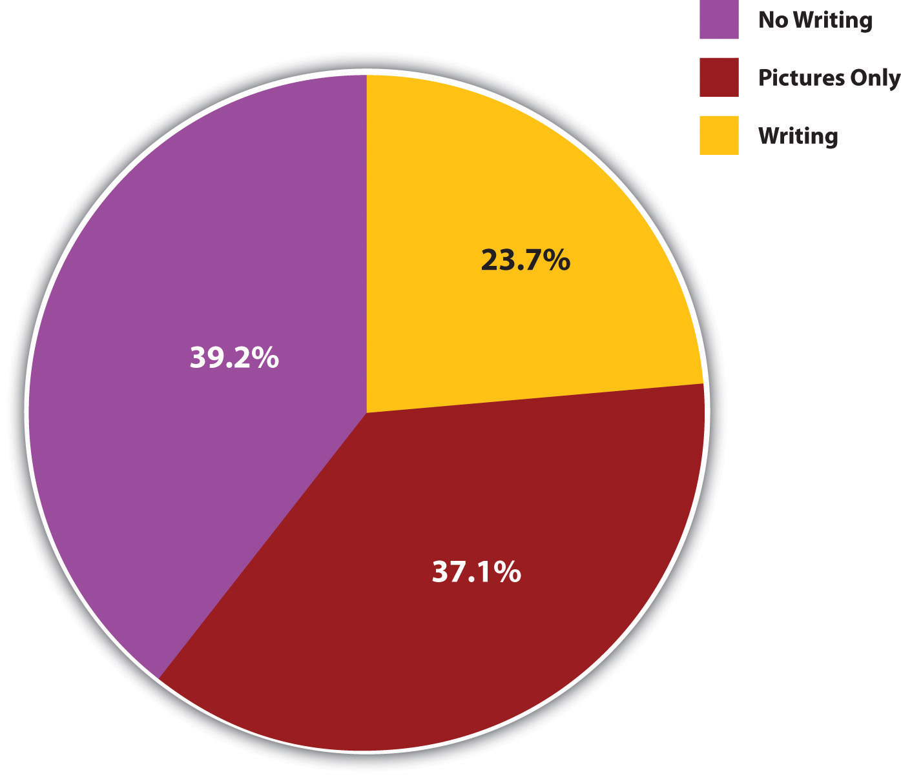
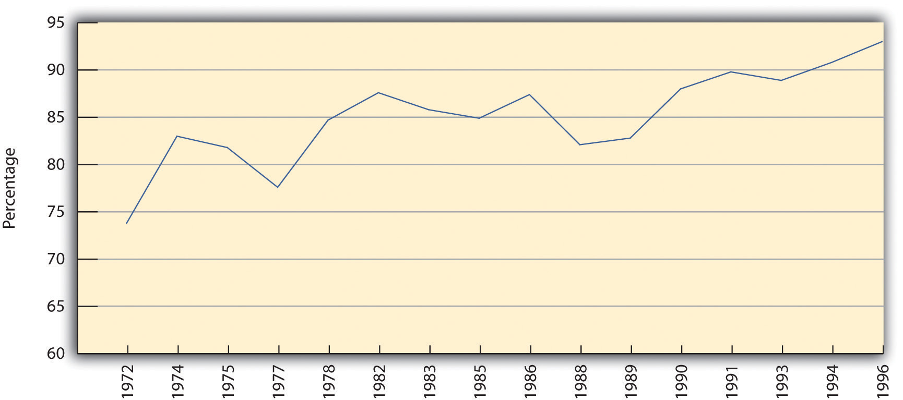
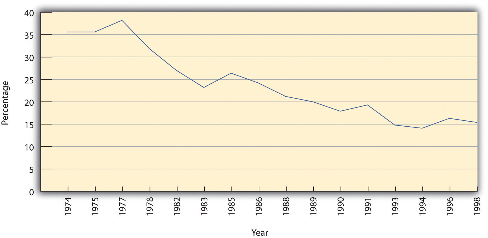
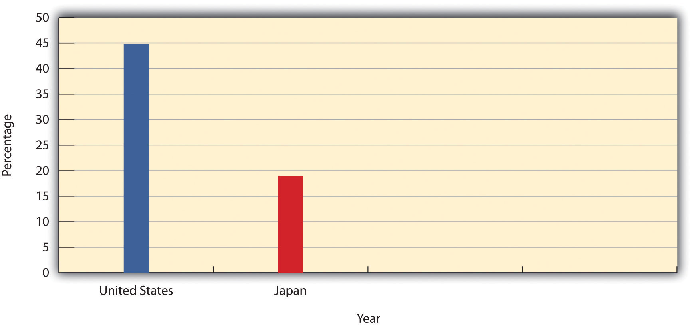
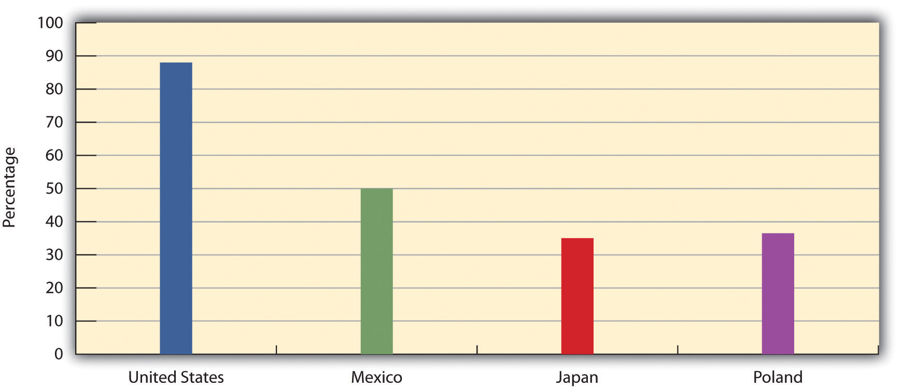
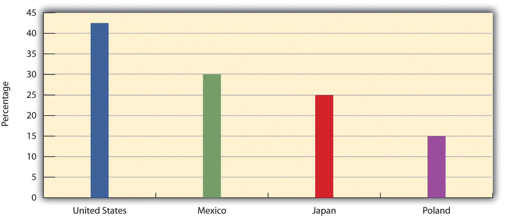
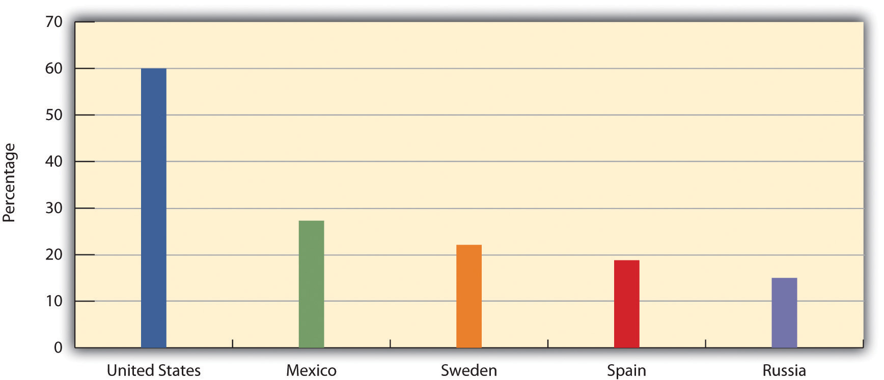
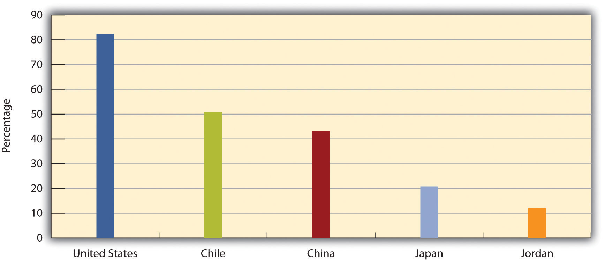
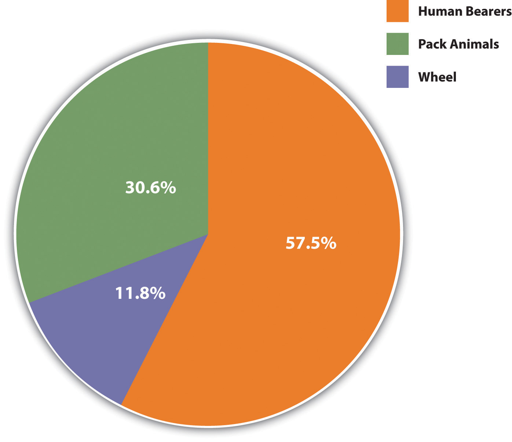

Culture was defined earlier as the symbols, language, beliefs, values, and artifacts that are part of any society. As this definition suggests, there are two basic components of culture: ideas and symbols on the one hand and artifacts (material objects) on the other. The first type, called nonmaterial cultureThe symbols, language, norms, and values that constitute a major part of a society’s culture., includes the values, beliefs, symbols, and language that define a society. The second type, called material cultureAn element of culture consisting of society’s material objects, or artifacts., includes all the society’s physical objects, such as its tools and technology, clothing, eating utensils, and means of transportation. These elements of culture are discussed next.
Every culture is filled with symbolsThings that stand for something else and that often evoke various reactions and emotions., or things that stand for something else and that often evoke various reactions and emotions. Some symbols are actually types of nonverbal communication, while other symbols are in fact material objects. As the symbolic interactionist perspective discussed in Chapter 1 "Sociology and the Sociological Perspective" emphasizes, shared symbols make social interaction possible.
Let’s look at nonverbal symbols first. A common one is shaking hands, which is done in some societies but not in others. It commonly conveys friendship and is used as a sign of both greeting and departure. Probably all societies have nonverbal symbols we call gesturesMovements of the hands, arms, head, and other parts of the body that are meant to convey ideas or emotions nonverbally., movements of the hands, arms, or other parts of the body that are meant to convey certain ideas or emotions. However, the same gesture can mean one thing in one society and something quite different in another society (Axtell, 1998).Axtell, R. E. (1998). Gestures: The do’s and taboos of body language around the world. New York, NY: Wiley. In the United States, for example, if we nod our head up and down, we mean yes, and if we shake it back and forth, we mean no. In Bulgaria, however, nodding means no, while shaking our head back and forth means yes! In the United States, if we make an “O” by putting our thumb and forefinger together, we mean “OK,” but the same gesture in certain parts of Europe signifies an obscenity. “Thumbs up” in the United States means “great” or “wonderful,” but in Australia it means the same thing as extending the middle finger in the United States. Certain parts of the Middle East and Asia would be offended if they saw you using your left hand to eat, because they use their left hand for bathroom hygiene.
Some of our most important symbols are objects. Here the U.S. flag is a prime example. For most Americans, the flag is not just a piece of cloth with red and white stripes and white stars against a field of blue. Instead, it is a symbol of freedom, democracy, and other American values and, accordingly, inspires pride and patriotism. During the Vietnam War, however, the flag became to many Americans a symbol of war and imperialism. Some burned the flag in protest, prompting angry attacks by bystanders and negative coverage by the news media.
Other objects have symbolic value for religious reasons. Three of the most familiar religious symbols in many nations are the cross, the Star of David, and the crescent moon, which are widely understood to represent Christianity, Judaism, and Islam, respectively. Whereas many cultures attach no religious significance to these shapes, for many people across the world they evoke very strong feelings of religious faith. Recognizing this, hate groups have often desecrated these symbols.
As these examples indicate, shared symbols, both nonverbal communication and tangible objects, are an important part of any culture but also can lead to misunderstandings and even hostility. These problems underscore the significance of symbols for social interaction and meaning.
Perhaps our most important set of symbols is language. In English, the word chair means something we sit on. In Spanish, the word silla means the same thing. As long as we agree how to interpret these words, a shared language and thus society are possible. By the same token, differences in languages can make it quite difficult to communicate. For example, imagine you are in a foreign country where you do not know the language and the country’s citizens do not know yours. Worse yet, you forgot to bring your dictionary that translates their language into yours, and vice versa, and your iPhone battery has died. You become lost. How will you get help? What will you do? Is there any way to communicate your plight?
As this scenario suggests, language is crucial to communication and thus to any society’s culture. Children learn language from their culture just as they learn about shaking hands, about gestures, and about the significance of the flag and other symbols. Humans have a capacity for language that no other animal species possesses. Our capacity for language in turn helps make our complex culture possible.
In the United States, some people consider a common language so important that they advocate making English the official language of certain cities or states or even the whole country and banning bilingual education in the public schools (Ray, 2007).Ray, S. (2007). Politics over official language in the United States. International Studies, 44, 235–252. Critics acknowledge the importance of English but allege that this movement smacks of anti-immigrant prejudice and would help destroy ethnic subcultures. In 2009, voters in Nashville, Tennessee, rejected a proposal that would have made English the city’s official language and required all city workers to speak in English rather than their native language (R. Brown, 2009).Brown, R. (2009, January 24). Nashville voters reject a proposal for English-only. The New York Times, p. A12.
Language, of course, can be spoken or written. One of the most important developments in the evolution of society was the creation of written language. Some of the preindustrial societies that anthropologists have studied have written language, while others do not, and in the remaining societies the “written” language consists mainly of pictures, not words. Figure 3.1 "The Presence of Written Language (Percentage of Societies)" illustrates this variation with data from 186 preindustrial societies called the Standard Cross-Cultural Sample (SCCS), a famous data set compiled several decades ago by anthropologist George Murdock and colleagues from information that had been gathered on hundreds of preindustrial societies around the world (Murdock & White, 1969).Murdock, G. P., & White, D. R. (1969). Standard cross-cultural sample. Ethnology, 8, 329–369. In Figure 3.1 "The Presence of Written Language (Percentage of Societies)", we see that only about one-fourth of the SCCS societies have a written language, while about equal proportions have no language at all or only pictures.
Figure 3.1 The Presence of Written Language (Percentage of Societies)
Source: Data from Standard Cross-Cultural Sample.
To what extent does language influence how we think and how we perceive the social and physical worlds? The famous but controversial Sapir-Whorf hypothesisThe view that language influences the thoughts and perceptions of people in a society., named after two linguistic anthropologists, Edward Sapir and Benjamin Lee Whorf, argues that people cannot easily understand concepts and objects unless their language contains words for these items (Whorf, 1956).Whorf, B. (1956). Language, thought and reality. Cambridge, MA: MIT Press. Language thus influences how we understand the world around us. For example, people in a country such as the United States that has many terms for different types of kisses (e.g. buss, peck, smack, smooch, and soul) are better able to appreciate these different types than people in a country such as Japan, which, as we saw earlier, only fairly recently developed the word kissu for kiss.
Another illustration of the Sapir-Whorf hypothesis is seen in sexist language, in which the use of male nouns and pronouns shapes how we think about the world (Miles, 2008).Miles, S. (2008). Language and sexism. New York, NY: Cambridge University Press. In older children’s books, words like fireman and mailman are common, along with pictures of men in these jobs, and critics say they send a message to children that these are male jobs, not female jobs. If a teacher tells a second-grade class, “Every student should put his books under his desk,” the teacher obviously means students of both sexes but may be sending a subtle message that boys matter more than girls. For these reasons, several guidebooks promote the use of nonsexist language (Maggio, 1998).Maggio, R. (1998). The dictionary of bias-free usage: A guide to nondiscriminatory language. Phoenix, AZ: Oryx Press. Table 3.1 "Examples of Sexist Terms and Nonsexist Alternatives" provides examples of sexist language and nonsexist alternatives.
Table 3.1 Examples of Sexist Terms and Nonsexist Alternatives
| Term | Alternative |
|---|---|
| Businessman | Businessperson, executive |
| Fireman | Fire fighter |
| Chairman | Chair, chairperson |
| Policeman | Police officer |
| Mailman | Letter carrier, postal worker |
| Mankind | Humankind, people |
| Man-made | Artificial, synthetic |
| Waitress | Server |
| He (as generic pronoun) | He or she; he/she; s/he |
| “A professor should be devoted to his students” | “Professors should be devoted to their students” |
The use of racist language also illustrates the Sapir-Whorf hypothesis. An old saying goes, “Sticks and stones may break my bones, but names will never hurt me.” That may be true in theory but not in reality. Names can hurt, especially names that are racial slurs, which African Americans growing up before the era of the civil rights movement routinely heard. According to the Sapir-Whorf hypothesis, the use of these words would have affected how whites perceived African Americans. More generally, the use of racist terms may reinforce racial prejudice and racial stereotypes.
Overcoming Cultural and Ethnic Differences
People from many different racial and ethnic backgrounds live in large countries such as the United States. Because of cultural differences and various prejudices, it can be difficult for individuals from one background to interact with individuals from another background. Fortunately, a line of research, grounded in contact theory and conducted by sociologists and social psychologists, suggests that interaction among individuals from different backgrounds can indeed help overcome tensions arising from their different cultures and any prejudices they may hold. This happens because such contact helps disconfirm stereotypes that people may hold of those from different backgrounds (Dixon, 2006; Pettigrew & Tropp, 2005).Dixon, J. C. (2006). The ties that bind and those that don’t: Toward reconciling group threat and contact theories of prejudice. Social Forces, 84, 2179–2204; Pettigrew, T. F., & Tropp, L. R. (2005). Allport’s intergroup contact hypothesis: Its history and influence. In J. F. Dovidio, P. S. Glick, & L. A. Rudman (Eds.), On the nature of prejudice: Fifty years after Allport (pp. 262–277). Malden, MA: Blackwell.
Recent studies of college students provide additional evidence that social contact can help overcome cultural differences and prejudices. Because many students are randomly assigned to their roommates when they enter college, interracial roommates provide a “natural” experiment for studying the effects of social interaction on racial prejudice. Studies of such roommates find that whites with black roommates report lowered racial prejudice and greater numbers of interracial friendships with other students (Laar, Levin, Sinclair, & Sidanius, 2005; Shook & Fazio, 2008).Laar, C. V., Levin, S., Sinclair, S., & Sidanius, J. (2005). The effect of university roommate contact on ethnic attitudes and behavior. Journal of Experimental Social Psychology, 41, 329–345; Shook, N. J., & Fazio, R. H. (2008). Interracial roommate relationships: An experimental test of the contact hypothesis. Psychological Science, 19, 717–723.
It is not easy to overcome cultural differences and prejudices, and studies also find that interracial college roommates often have to face many difficulties in overcoming the cultural differences and prejudices that existed before they started living together (Shook & Fazio, 2008).Shook, N. J., & Fazio, R. H. (2008). Roommate relationships: A comparison of interracial and same-race living situations. Group Processes & Intergroup Relations, 11, 425–437. Yet the body of work supporting contact theory suggests that efforts that increase social interaction among people from different cultural and ethnic backgrounds in the long run will reduce racial and ethnic tensions.
Cultures differ widely in their normsSocially acceptable ways of behaving., or standards and expectations for behaving. We already saw that the nature of drunken behavior depends on society’s expectations of how people should behave when drunk. Norms of drunken behavior influence how we behave when we drink too much.
Norms are often divided into two types, formal normsNorms that are very important and usually written down; also called laws and mores. and informal normsRelatively unimportant norms, often unwritten, that still affect people’s behavior.. Formal norms, also called mores (MOOR-ayz) and laws, refer to the standards of behavior considered the most important in any society. Examples in the United States include traffic laws, criminal codes, and, in a college context, student behavior codes addressing such things as cheating and hate speech. Informal norms, also called folkways and customs, refer to standards of behavior that are considered less important but still influence how we behave. Table manners are a common example of informal norms, as are such everyday behaviors as how we interact with a cashier and how we ride in an elevator.
Many norms differ dramatically from one culture to the next. Some of the best evidence for cultural variation in norms comes from the study of sexual behavior (Edgerton, 1976).Edgerton, R. (1976). Deviance: A cross-cultural perspective. Menlo Park, CA: Cummings. Among the Pokot of East Africa, for example, women are expected to enjoy sex, while among the Gusii a few hundred miles away, women who enjoy sex are considered deviant. In Inis Beag, a small island off the coast of Ireland, sex is considered embarrassing and even disgusting; men feel that intercourse drains their strength, while women consider it a burden. Even nudity is considered terrible, and people on Inis Beag keep their clothes on while they bathe. The situation is quite different in Mangaia, a small island in the South Pacific. Here sex is considered very enjoyable, and it is the major subject of songs and stories.
While many societies frown on homosexuality, others accept it. Among the Azande of East Africa, for example, young warriors live with each other and are not allowed to marry. During this time, they often have sex with younger boys, and this homosexuality is approved by their culture. Among the Sambia of New Guinea, young males live separately from females and engage in homosexual behavior for at least a decade. It is felt that the boys would be less masculine if they continued to live with their mothers and that the semen of older males helps young boys become strong and fierce (Edgerton, 1976).Edgerton, R. (1976). Deviance: A cross-cultural perspective. Menlo Park, CA: Cummings.
Other evidence for cultural variation in norms comes from the study of how men and women are expected to behave in various societies. For example, many traditional societies are simple hunting-and-gathering societies. In most of these, men tend to hunt and women tend to gather. Many observers attribute this gender difference to at least two biological differences between the sexes. First, men tend to be bigger and stronger than women and are thus better suited for hunting. Second, women become pregnant and bear children and are less able to hunt. Yet a different pattern emerges in some hunting-and-gathering societies. Among a group of Australian aborigines called the Tiwi and a tribal society in the Philippines called the Agta, both sexes hunt. After becoming pregnant, Agta women continue to hunt for most of their pregnancy and resume hunting after their child is born (Brettell & Sargent, 2009).Brettell, C. B., & Sargent, C. F. (Eds.). (2009). Gender in cross-cultural perspective (5th ed.). Upper Saddle River, NJ: Prentice Hall.
Some of the most interesting norms that differ by culture govern how people stand apart when they talk with each other (Hall & Hall, 2007).Hall, E. T., & Hall, M. R. (2007). The sounds of silence. In J. M. Henslin (Ed.), Down to earth sociology: Introductory readings (pp. 109–117). New York, NY: Free Press. In the United States, people who are not intimates usually stand about three to four feet apart when they talk. If someone stands more closely to us, especially if we are of northern European heritage, we feel uncomfortable. Yet people in other countries—especially Italy, France, Spain, and many of the nations of Latin America and the Middle East—would feel uncomfortable if they were standing three to four feet apart. To them, this distance is too great and indicates that the people talking dislike each other. If a U.S. native of British or Scandinavian heritage were talking with a member of one of these societies, they might well have trouble interacting, because at least one of them will be uncomfortable with the physical distance separating them.
Different cultures also have different ritualsEstablished procedures and ceremonies that often mark transitions in the life course., or established procedures and ceremonies that often mark transitions in the life course. As such, rituals both reflect and transmit a culture’s norms and other elements from one generation to the next. Graduation ceremonies in colleges and universities are familiar examples of time-honored rituals. In many societies, rituals help signify one’s gender identity. For example, girls around the world undergo various types of initiation ceremonies to mark their transition to adulthood. Among the Bemba of Zambia, girls undergo a month-long initiation ceremony called the chisungu, in which girls learn songs, dances, and secret terms that only women know (Maybury-Lewis, 1998).Maybury-Lewis, D. (1998). Tribal wisdom. In K. Finsterbusch (Ed.), Sociology 98/99 (pp. 8–12). Guilford, CT: Dushkin/McGraw-Hill. In some cultures, special ceremonies also mark a girl’s first menstrual period. Such ceremonies are largely absent in the United States, where a girl’s first period is a private matter. But in other cultures the first period is a cause for celebration involving gifts, music, and food (Hathaway, 1997).Hathaway, N. (1997). Menstruation and menopause: Blood rites. In L. M. Salinger (Ed.), Deviant behavior 97/98 (pp. 12–15). Guilford, CT: Dushkin.
Boys have their own initiation ceremonies, some of them involving circumcision. That said, the ways in which circumcisions are done and the ceremonies accompanying them differ widely. In the United States, boys who are circumcised usually undergo a quick procedure in the hospital. If their parents are observant Jews, circumcision will be part of a religious ceremony, and a religious figure called a moyel will perform the circumcision. In contrast, circumcision among the Maasai of East Africa is used as a test of manhood. If a boy being circumcised shows signs of fear, he might well be ridiculed (Maybury-Lewis, 1998).Maybury-Lewis, D. (1998). Tribal wisdom. In K. Finsterbusch (Ed.), Sociology 98/99 (pp. 8–12). Guilford, CT: Dushkin/McGraw-Hill.
Are rituals more common in traditional societies than in industrial ones such as the United States? Consider the Nacirema, studied by anthropologist Horace Miner more than 50 years ago (Miner, 1956).Miner, H. (1956). Body ritual among the Nacirema. American Anthropologist, 58, 503–507. In this society, many rituals have been developed to deal with the culture’s fundamental belief that the human body is ugly and in danger of suffering many diseases. Reflecting this belief, every household has at least one shrine in which various rituals are performed to cleanse the body. Often these shrines contain magic potions acquired from medicine men. The Nacirema are especially concerned about diseases of the mouth. Miner writes, “Were it not for the rituals of the mouth, they believe that their teeth would fall out, their gums bleed, their jaws shrink, their friends desert them, and their lovers reject them” (p. 505).Miner, H. (1956). Body ritual among the Nacirema. American Anthropologist, 58, 503–507. Many Nacirema engage in “mouth-rites” and see a “holy-mouth-man” once or twice yearly.
Spell Nacirema backward and you will see that Miner was describing American culture. As his satire suggests, rituals are not limited to preindustrial societies. Instead, they function in many kinds of societies to mark transitions in the life course and to transmit the norms of the culture from one generation to the next.
Our examples show that different cultures have different norms, even if they share other types of practices and beliefs. It is also true that norms change over time within a given culture. Two obvious examples here are hairstyles and clothing styles. When the Beatles first became popular in the early 1960s, their hair barely covered their ears, but parents of teenagers back then were aghast at how they looked. If anything, clothing styles change even more often than hairstyles. Hemlines go up, hemlines go down. Lapels become wider, lapels become narrower. This color is in, that color is out. Hold on to your out-of-style clothes long enough, and eventually they may well end up back in style.
Some norms may change over time within a given culture. In the early 1960s, the hair of the four members of the Beatles barely covered their ears, but many parents of U.S. teenagers were very critical of the length of their hair.
Source: Photo courtesy of U.S. Library of Congress, http://www.loc.gov/pictures/resource/cph.3c11094.
A more important topic on which norms have changed is abortion and birth control (Bullough & Bullough, 1977).Bullough, V. L., & Bullough, B. (1977). Sin, sickness, and sanity: A history of sexual attitudes. New York, NY: New American Library. Despite the controversy surrounding abortion today, it was very common in the ancient world. Much later, medieval theologians generally felt that abortion was not murder if it occurred within the first several weeks after conception. This distinction was eliminated in 1869, when Pope Pius IX declared abortion at any time to be murder. In the United States, abortion was not illegal until 1828, when New York state banned it to protect women from unskilled abortionists, and most other states followed suit by the end of the century. However, the sheer number of unsafe, illegal abortions over the next several decades helped fuel a demand for repeal of abortion laws that in turn helped lead to the Roe v. Wade Supreme Court decision in 1973 that generally legalized abortion during the first two trimesters.
Contraception was also practiced in ancient times, only to be opposed by early Christianity. Over the centuries, scientific discoveries of the nature of the reproductive process led to more effective means of contraception and to greater calls for its use, despite legal bans on the distribution of information about contraception. In the early 1900s, Margaret Sanger, an American nurse, spearheaded the growing birth-control movement and helped open a birth-control clinic in Brooklyn in 1916. She and two other women were arrested within 10 days, and Sanger and one other defendant were sentenced to 30 days in jail. Efforts by Sanger and other activists helped to change views on contraception over time, and finally, in 1965, the U.S. Supreme Court ruled in Griswold v. Connecticut that contraception information could not be banned. As this brief summary illustrates, norms about contraception changed dramatically during the last century.
Other types of cultural beliefs also change over time (Figure 3.2 "Percentage of People Who Say They Would Vote for a Qualified African American for President" and Figure 3.3 "Percentage of People Who Agree Women Should Take Care of Running Their Homes"). Since the 1960s, the U.S. public has changed its views about some important racial and gender issues. Figure 3.2 "Percentage of People Who Say They Would Vote for a Qualified African American for President", taken from several years of the General Social Survey (GSS), shows that the percentage of Americans who would vote for a qualified black person as president rose almost 20 points from the early 1970s to the middle of 1996, when the GSS stopped asking the question. If beliefs about voting for an African American had not changed, Barack Obama would almost certainly not have been elected in 2008. Figure 3.3 "Percentage of People Who Agree Women Should Take Care of Running Their Homes", also taken from several years of the GSS, shows that the percentage saying that women should take care of running their homes and leave running the country to men declined from almost 36% in the early 1970s to only about 15% in 1998, again, when the GSS stopped asking the question. These two figures depict declining racial and gender prejudice in the United States during the past quarter-century.
Figure 3.2 Percentage of People Who Say They Would Vote for a Qualified African American for President
Source: Data from General Social Surveys, 1972–1996.
Figure 3.3 Percentage of People Who Agree Women Should Take Care of Running Their Homes
Source: Data from General Social Surveys, 1974–1998.
ValuesCriteria of what is desirable or undesirable and right or wrong. are another important element of culture and involve judgments of what is good or bad and desirable or undesirable. A culture’s values shape its norms. In Japan, for example, a central value is group harmony. The Japanese place great emphasis on harmonious social relationships and dislike interpersonal conflict. Individuals are fairly unassertive by American standards, lest they be perceived as trying to force their will on others (Schneider & Silverman, 2010).Schneider, L., & Silverman, A. (2010). Global sociology: Introducing five contemporary societies (5th ed.). New York, NY: McGraw-Hill. When interpersonal disputes do arise, Japanese do their best to minimize conflict by trying to resolve the disputes amicably. Lawsuits are thus uncommon; in one case involving disease and death from a mercury-polluted river, some Japanese who dared to sue the company responsible for the mercury poisoning were considered bad citizens (Upham, 1976).Upham, F. K. (1976). Litigation and moral consciousness in Japan: An interpretive analysis of four Japanese pollution suits. Law and Society Review, 10, 579–619.
In the United States, of course, the situation is quite different. The American culture extols the rights of the individual and promotes competition in the business and sports worlds and in other areas of life. Lawsuits over the most frivolous of issues are quite common and even expected. Phrases like “Look out for number one!” abound. If the Japanese value harmony and group feeling, Americans value competition and individualism. Because the Japanese value harmony, their norms frown on self-assertion in interpersonal relationships and on lawsuits to correct perceived wrongs. Because Americans value and even thrive on competition, our norms promote assertion in relationships and certainly promote the use of the law to address all kinds of problems.
Figure 3.4 "Percentage of People Who Think Competition Is Very Beneficial" illustrates this difference between the two nations’ cultures with data from the 2002 World Values Survey (WVS), which was administered to random samples of the adult populations of more than 80 nations around the world. One question asked in these nations was, “On a scale of one (‘competition is good; it stimulates people to work hard and develop new ideas’) to ten (‘competition is harmful; it brings out the worst in people’), please indicate your views on competition.” Figure 3.4 "Percentage of People Who Think Competition Is Very Beneficial" shows the percentages of Americans and Japanese who responded with a “one” or “two” to this question, indicating they think competition is very beneficial. Americans are about three times as likely as Japanese to favor competition.
Figure 3.4 Percentage of People Who Think Competition Is Very Beneficial
Source: Data from World Values Survey, 2002.
The Japanese value system is a bit of an anomaly, because Japan is an industrial nation with very traditional influences. Its emphasis on group harmony and community is more usually thought of as a value found in traditional societies, while the U.S. emphasis on individuality is more usually thought of as a value found in industrial cultures. Anthropologist David Maybury-Lewis (1998, p. 8)Maybury-Lewis, D. (1998). Tribal wisdom. In K. Finsterbusch (Ed.), Sociology 98/99 (pp. 8–12). Guilford, CT: Dushkin/McGraw-Hill. describes this difference as follows: “The heart of the difference between the modern world and the traditional one is that in traditional societies people are a valuable resource and the interrelations between them are carefully tended; in modern society things are the valuables and people are all too often treated as disposable.” In industrial societies, continues Maybury-Lewis, individualism and the rights of the individual are celebrated and any one person’s obligations to the larger community are weakened. Individual achievement becomes more important than values such as kindness, compassion, and generosity.
Other scholars take a less bleak view of industrial society, where they say the spirit of community still lives even as individualism is extolled (Bellah, Madsen, Sullivan, Swidler, & Tipton, 1985).Bellah, R. N., Madsen, R., Sullivan, W. M., Swidler, A., & Tipton, S. M. (1985). Habits of the heart: Individualism and commitment in American life. Berkeley: University of California Press. In American society, these two simultaneous values sometimes create tension. In Appalachia, for example, people view themselves as rugged individuals who want to control their own fate. At the same time, they have strong ties to families, relatives, and their neighbors. Thus their sense of independence conflicts with their need for dependence on others (Erikson, 1976).Erikson, K. T. (1976). Everything in its path: Destruction of community in the Buffalo Creek flood. New York, NY: Simon and Schuster.
Another important value in the American culture is the work ethic. By the 19th century, Americans had come to view hard work not just as something that had to be done but as something that was morally good to do (Gini, 2000).Gini, A. (2000). My job, my self: Work and the creation of the modern individual. New York, NY: Routledge. The commitment to the work ethic remains strong today: in the 2008 General Social Survey, 72% of respondents said they would continue to work even if they got enough money to live as comfortably as they would like for the rest of their lives.
Cross-cultural evidence supports the importance of the work ethic in the United States. Using earlier World Values Survey data, Figure 3.5 "Percentage of People Who Take a Great Deal of Pride in Their Work" presents the percentage of people in United States and three other nations from different parts of the world—Mexico, Poland, and Japan—who take “a great deal of pride” in their work. More than 85% of Americans feel this way, compared to much lower proportions of people in the other three nations.
Figure 3.5 Percentage of People Who Take a Great Deal of Pride in Their Work
Source: Data from World Values Survey, 1993.
Closely related to the work ethic is the belief that if people work hard enough, they will be successful. Here again the American culture is especially thought to promote the idea that people can pull themselves up by their “bootstraps” if they work hard enough. The WVS asked whether success results from hard work or from luck and connections. Figure 3.6 "Percentage of People Who Think Hard Work Brings Success" presents the proportions of people in the four nations just examined who most strongly thought that hard work brings success. Once again we see evidence of an important aspect of the American culture, as U.S. residents were especially likely to think that hard work brings success.
Figure 3.6 Percentage of People Who Think Hard Work Brings Success
Source: Data from World Values Survey, 1997.
If Americans believe hard work brings success, then they should be more likely than people in most other nations to believe that poverty stems from not working hard enough. True or false, this belief is an example of the blaming-the-victim ideology introduced in Chapter 1 "Sociology and the Sociological Perspective". Figure 3.7 "Percentage of People Who Attribute Poverty to Laziness and Lack of Willpower" presents WVS percentages of respondents who said the most important reason people are poor is “laziness and lack of willpower.” As expected, Americans are much more likely to attribute poverty to not working hard enough.
Figure 3.7 Percentage of People Who Attribute Poverty to Laziness and Lack of Willpower
Source: Data from World Values Survey, 1997.
We could discuss many other values, but an important one concerns how much a society values women’s employment outside the home. The WVS asked respondents whether they agree that “when jobs are scarce men should have more right to a job than women.” Figure 3.8 "Percentage of People Who Disagree That Men Have More Right to a Job Than Women When Jobs Are Scarce" shows that U.S. residents are more likely than those in nations with more traditional views of women to disagree with this statement.
Figure 3.8 Percentage of People Who Disagree That Men Have More Right to a Job Than Women When Jobs Are Scarce
Source: Data from World Values Survey, 2002.
The last element of culture is the artifactsThe material objects that constitute a society’s material culture., or material objects, that constitute a society’s material culture. In the most simple societies, artifacts are largely limited to a few tools, the huts people live in, and the clothing they wear. One of the most important inventions in the evolution of society was the wheel. Figure 3.9 "Primary Means of Moving Heavy Loads" shows that very few of the societies in the SCCS use wheels to move heavy loads over land, while the majority use human power and about one-third use pack animals.
Figure 3.9 Primary Means of Moving Heavy Loads
Source: Data from Standard Cross-Cultural Sample.
Although the wheel was a great invention, artifacts are much more numerous and complex in industrial societies. Because of technological advances during the past two decades, many such societies today may be said to have a wireless culture, as smartphones, netbooks and laptops, and GPS devices now dominate so much of modern life. The artifacts associated with this culture were unknown a generation ago. Technological development created these artifacts and new language to describe them and the functions they perform. Today’s wireless artifacts in turn help reinforce our own commitment to wireless technology as a way of life, if only because children are now growing up with them, often even before they can read and write.
Sometimes people in one society may find it difficult to understand the artifacts that are an important part of another society’s culture. If a member of a tribal society who had never seen a cell phone, or who had never even used batteries or electricity, were somehow to visit the United States, she or he would obviously have no idea of what a cell phone was or of its importance in almost everything we do these days. Conversely, if we were to visit that person’s society, we might not appreciate the importance of some of its artifacts.
In this regard, consider once again India’s cows, discussed in the news article that began this chapter. As the article mentioned, people from India consider cows holy, and they let cows roam the streets of many cities. In a nation where hunger is so rampant, such cow worship is difficult to understand, at least to Americans, because a ready source of meat is being ignored.
Anthropologist Marvin Harris (1974)Harris, M. (1974). Cows, pigs, wars, and witches: The riddles of culture. New York, NY: Vintage Books. advanced a practical explanation for India’s cow worship. Millions of Indians are peasants who rely on their farms for their food and thus their existence. Oxen and water buffalo, not tractors, are the way they plow their fields. If their ox falls sick or dies, farmers may lose their farms. Because, as Harris observes, oxen are made by cows, it thus becomes essential to preserve cows at all costs. In India, cows also act as an essential source of fertilizer, to the tune of 700 million tons of manure annually, about half of which is used for fertilizer and the other half of which is used as fuel for cooking. Cow manure is also mixed with water and used as flooring material over dirt floors in Indian households. For all of these reasons, cow worship is not so puzzling after all, because it helps preserve animals that are very important for India’s economy and other aspects of its way of life.
If Indians exalt cows, many Jews and Muslims feel the opposite about pigs: they refuse to eat any product made from pigs and so obey an injunction from the Old Testament of the Bible and from the Koran. Harris thinks this injunction existed because pig farming in ancient times would have threatened the ecology of the Middle East. Sheep and cattle eat primarily grass, while pigs eat foods that people eat, such as nuts, fruits, and especially grains. In another problem, pigs do not provide milk and are much more difficult to herd than sheep or cattle. Next, pigs do not thrive well in the hot, dry climate in which the people of the Old Testament and Koran lived. Finally, sheep and cattle were a source of food back then because beyond their own meat they provided milk, cheese, and manure, and cattle were also used for plowing. In contrast, pigs would have provided only their own meat. Because sheep and cattle were more “versatile” in all of these ways, and because of the other problems pigs would have posed, it made sense for the eating of pork to be prohibited.
In contrast to Jews and Muslims, at least one society, the Maring of the mountains of New Guinea, is characterized by “pig love.” Here pigs are held in the highest regard. The Maring sleep next to pigs, give them names and talk to them, feed them table scraps, and once or twice every generation have a mass pig sacrifice that is intended to ensure the future health and welfare of Maring society. Harris explains their love of pigs by noting that their climate is ideally suited to raising pigs, which are an important source of meat for the Maring. Because too many pigs would overrun the Maring, their periodic pig sacrifices help keep the pig population to manageable levels. Pig love thus makes as much sense for the Maring as pig hatred did for people in the time of the Old Testament and the Koran.